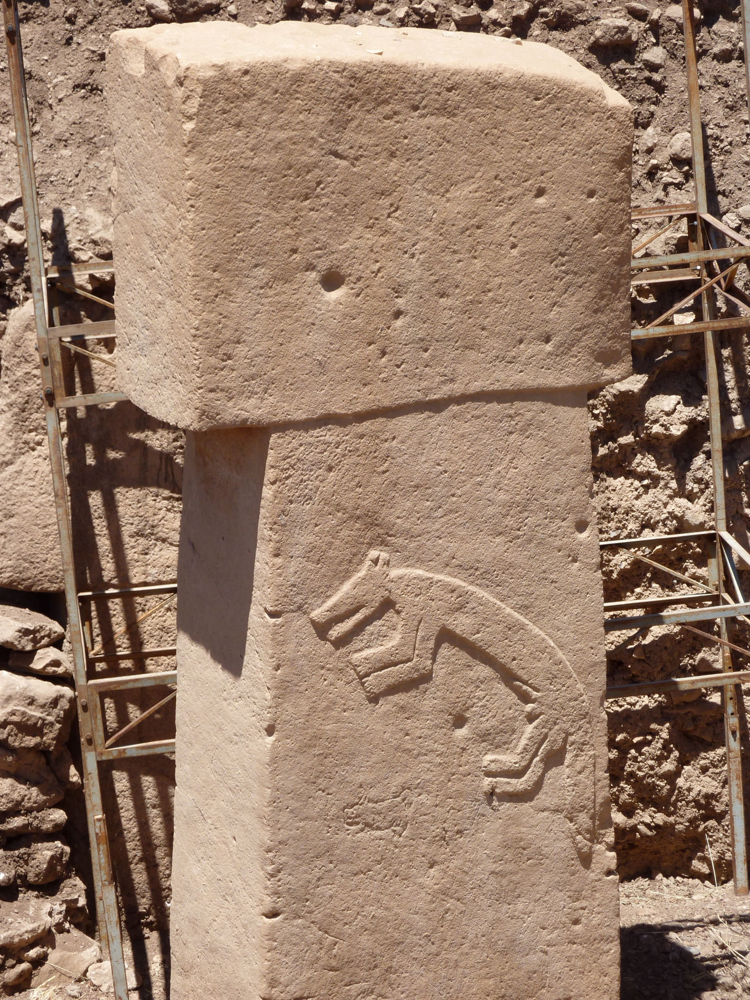
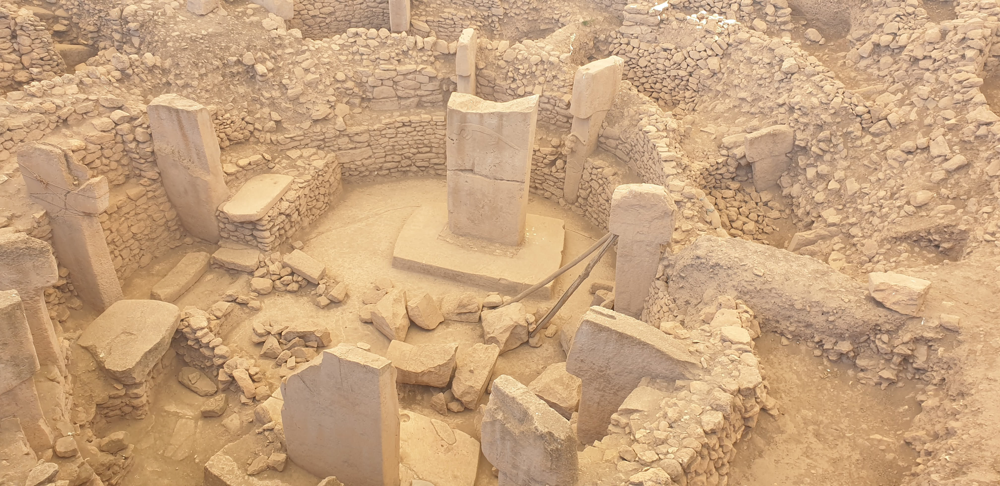

Durante un siglo creímos que primero llegó la agricultura, después las ciudades y, al final, los templos. Una colina en Turquía dio la vuelta a ese orden por completo.
Hasta ahora hemos rastreado gestos: enterramientos, ocre, ofrendas. Señales íntimas, de un cuerpo ante otro cuerpo. Pero en algún momento lo sagrado dio un salto de escala: dejó de ser un gesto privado y se convirtió en arquitectura, en piedra levantada por muchas manos hacia algo compartido. Ese salto tiene un nombre y un lugar: Göbekli Tepe.
Antes de contarlo, bajemos hasta él. Literalmente.
En el sureste de Turquía, cerca de la ciudad de Şanlıurfa, hay una loma que los campesinos kurdos llamaban Göbekli Tepe —"la colina panzuda" o "del ombligo"—. Durante milenios fue solo eso: una elevación en el paisaje, sembrada de piedras que parecían lápidas medievales. En 1963, unos arqueólogos la visitaron, vieron las piedras, supusieron que era un cementerio tardío sin interés, y se marcharon.
Tuvieron que pasar treinta años hasta que, en 1994, el arqueólogo alemán Klaus Schmidt volvió a mirar. Y comprendió que aquellas "lápidas" eran las puntas de algo enorme enterrado bajo la colina. Lo que desenterró cambiaría los manuales de historia.
Bajo el montículo aparecieron recintos circulares definidos por muros de piedra, con enormes pilares en forma de T clavados a intervalos regulares. En el centro de cada recinto, dos pilares aún mayores, de hasta cinco metros de altura y varias toneladas de peso. Muchos están tallados con relieves de animales: zorros, serpientes, jabalíes, escorpiones, aves.

La datación por radiocarbono situó las capas más antiguas alrededor del 9600 a.C.: hace unos 11.500 años. Para hacernos una idea: es siete mil años más antiguo que Stonehenge y que las pirámides de Egipto. Y aquí viene lo que lo hace imposible según todo lo que creíamos saber.
Göbekli Tepe es un conjunto de templos de piedra levantado hace 11.500 años, mucho antes de que existieran las ciudades, la escritura o la agricultura. Es la arquitectura monumental más antigua que conocemos.
Durante casi todo el siglo XX, los arqueólogos daban por sentado un orden lógico. Primero, los humanos inventaron la agricultura. La agricultura produjo excedentes de comida. Los excedentes permitieron pueblos estables y gente liberada del trabajo diario. Y solo entonces —con ciudades, jerarquías y tiempo libre— pudo surgir la religión organizada y la capacidad de levantar templos. La religión, en ese modelo, era un lujo tardío de la civilización.
Göbekli Tepe pone ese orden patas arriba. Lo construyeron cazadores-recolectores: gente sin agricultura, sin cerámica, sin escritura, sin ciudades. Movieron pilares de varias toneladas y los tallaron con arte sofisticado, y lo hicieron antes de sembrar el primer campo. La conclusión es vertiginosa: quizá no fue la civilización la que produjo los templos, sino que la necesidad de reunirse en torno a lo sagrado pudo empujar a la civilización misma.

Es tentador llamarlo "el primer templo del mundo", y así aparece en muchos titulares. Pero conviene medir las palabras. Que no haya rastro de viviendas ni de vida doméstica cotidiana sugiere que no era un poblado normal, sino un lugar de reunión y ritual. Los relieves de animales peligrosos, la escala monumental, el esfuerzo colectivo: todo apunta a un espacio con carga simbólica.
Pero "templo" es una palabra nuestra, cargada de significados posteriores. No sabemos qué se hacía exactamente allí, si había algo parecido a "dioses", ni qué contaban los relieves. Sabemos que fue un lugar extraordinario, construido con enorme esfuerzo compartido, para algo que iba mucho más allá de sobrevivir. Llamarlo "santuario" es razonable; reconstruir su teología es imposible. Además, solo se ha excavado en torno al 5% del yacimiento: casi todo sigue bajo tierra.
Lectura: la datación (~9600 a.C.) y la autoría por cazadores-recolectores son consenso firme. Que fuera un espacio ritual es ampliamente aceptado. La idea de que "el culto impulsó la civilización" es una hipótesis sugerente pero en debate: seductora, no demostrada.
Con esa cautela, lo que queda es igualmente asombroso. Hace once mil quinientos años, mucho antes de la primera espiga cultivada, un grupo de cazadores decidió que valía la pena mover montañas de piedra para construir un lugar sagrado. Lo primero que nuestra especie edificó a lo grande no fue una casa ni un granero. Fue un santuario.
Las dataciones por radiocarbono (capa III, ~9600 a.C.) proceden de las excavaciones del Instituto Arqueológico Alemán iniciadas por Klaus Schmidt en 1994; los recintos más antiguos (D y C) se fechan a mediados del X milenio a.C. El dato del 5% excavado y los ~200 megalitos detectados por georradar figuran en los informes del proyecto.
La tesis de que Göbekli Tepe invierte el orden "agricultura → religión" fue defendida por el propio Schmidt y es hoy influyente, pero sigue debatiéndose: algunos investigadores matizan que hubo formas tempranas de recolección intensiva de cereal en la zona, y que la relación entre culto y sedentarización fue mutua, no una simple causa y efecto.
Se evita deliberadamente el término "templo" en sentido estricto y cualquier reconstrucción de creencias concretas, por falta de evidencia. La escena de "excavación" de esta página es una ayuda narrativa, no una secuencia estratigráfica literal.